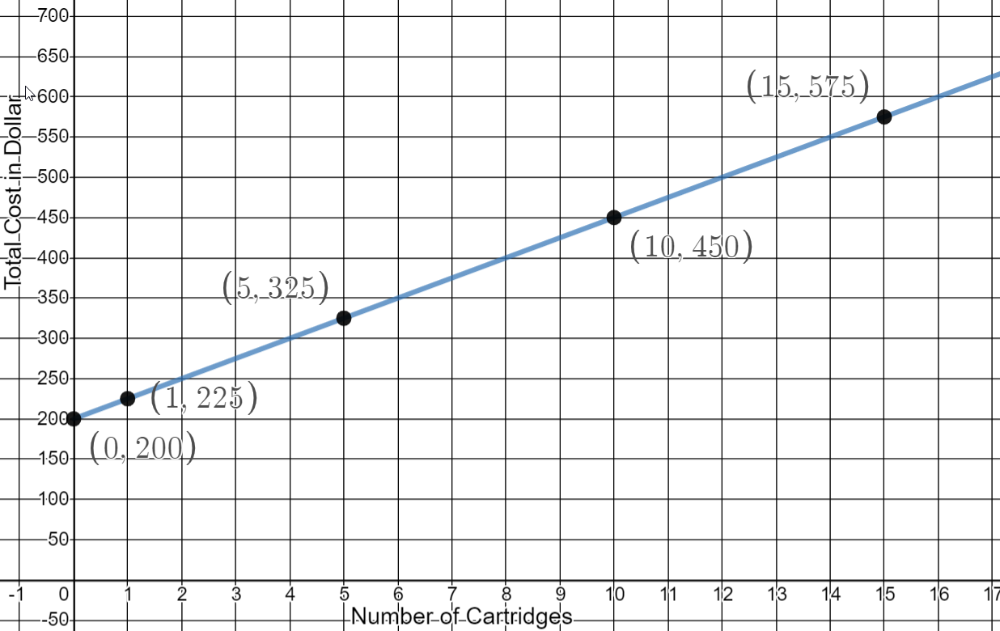

Unit 4 Hypothesis Testing
9.1 Correlation
Overview of Scatter Plots and Lines
- Construct a scatter plot of the following 5 sets of paired data: (0,2) (1,4) (3,2) (-4,1) (1,-3)

- Graph 5 points on the coordinate system below that form a line with the given slope: m=-2.
One of the 5 points must be (1,1)

- Draw a line using the following information: m=1/2 and the y-intercept is (0,1)

Correlation
Correlation is the relationship between 2 variables.The data can be represented by the ordered pairs (x, y), where x is the independent variable and y is the dependent variable.
Linear Correlation Coefficients:
- \(\rho\) (“rho”): the linear correlation coefficient for the POPULATION
- \(r_{TS}\): the linear correlation coefficient for SAMPLE DATA
Possible Correlation Coefficient Values

Graphing Correlation Coefficients on an interval from -1 to 1.

Linear correlations are not the only correlations.
A word of caution before we begin our work on Linear Regression: you can find the "line of best fit" for ANY paired data, but it is still not a good fit if the data is not linear. Always look at the scatter plot.

Linear Regression
- From Algebra Class:
- \(y=mx+b\)
- m = slope
- b = y-intercept
- In Statictics:
- \(\hat y=b+mx\)
- m = slope
- b = y-intercept
The regression equation expresses a relationship between x (the independent variable) and y (the dependent variable).
The graph of the regression equation is called the regression line, or line of best fit.
The regression line does not usually pass through all the sample points. That is why the “hat” is used over the y. This indicates we are calculating a predicted value and not necessarily an actual value.


Steps for Regression and Correlation Test:
- Define \(H_0\) and \(H_A\) (the same for every regression test)
\(H_0\): \(\rho=0\) There is no linear correlation in the population.
\(H_A\): \(\rho \neq 0\) There is some linear correlation in the population.
Note: A regression test is always a two-tailed test.
- Run the Regression and Correlation Test
There are two ways to look at Test Statistics and Critical Values, using the T-distribution AND using the Pearson Correlation Coefficient. We will look at both:

- Identify the information you will use to shade your graph:
- The two Critical Values from the T-distribution
- The Critical Values for the correlation coefficient from the TABLE on your formula sheet
- Identify the information about your sample:
- Stat - Regression - Simple Linear: x-variable, y-variable, Hypothesis Test
- Correlation Coefficient (r),
- Test Statistic (T-Stat), and
- the P-value for the “SLOPE”
- Draw the Graph:
Shade the Critical Areas of Rejection
Indicate the Test Statistic and Critical Values
- Make Your Decision About the Null Hypothesis:
Reject \(H_0\) p value < α T-stat is in the Critical Rejection Region
(The population must have some linear correlation)
Fail to Reject \(H_0\) p value> α T-stat is not in the Critical Rejection Region
(The population doesn’t appear to have a linear correlation)
- Make Your Statement:
- If you Reject \(H_0\): There is sufficient evidence to support the claim a linear correlation exists between _______ and _________
- If you Fail to Reject \(H_0\): There is NOT sufficient evidence to support the claim a linear correlation exists between _______ and _________
- Identify your regression equation: \(\hat y=b+mx\)
- Use your hypothesis test conclusions to calculate a value of y, given a value of x.
You must have a linear correlation in order to use the regression equation to predict a y value. If you do not have a good correlation, the only option you have for predicting a y value is to find the mean of the y values in your set of points.
If you Rejected \(H_0\), you have a linear correlation and will use your regression equation.
If you Failed To Reject \(H_0\), you do not appear to have a linear correlation so you will not use your regression equation. You will have to find another method to predict your y value.
Given an x, average the y values in your data to predict y. \(\overline{y}=\frac{\Sigma y}{n}\)
The Test Statistic (T-stat) for a regression test is calculated using: \(t=\frac{r}{\sqrt{\frac{1-r^{2}}{n-2}}}\)
The Critical Values for the Correlation Coefficient are found in Table 11 on the Unit 4 Formula Sheet
Problems
- Cricket Chirping Frequency and Temperature: Below is set of chirping frequency data for the striped ground cricket at various ground temperatures. Construct a scatterplot, and run a Regression and Correlation Test using α = 0.01. Determine whether there is sufficient evidence to support a claim of a linear correlation between chirping frequency and ground temperature.
Frequency 20.2 16.0 19.8 18.4 17.1 15.5 14.7 17.1 15.4 16.2 15.0 17.2 16.0 17.0 14.4 Temperature 88.6 71.6 93.3 84.3 80.6 75.2 69.7 82.0 69.4 83.3 79.6 82.6 80.6 83.5 76.3 Chirping Frequency (chirps/sec) and Temperature °F for the Striped Ground Cricket
- The original claim:
\(\rho \neq 0\) There exists a linear correlation between chirping frequency and ground temperature. - \(H_0\) :
\(\rho = 0\) There is no linear correlation in the population - \(H_A\) :
\(\rho \neq 0\) There is some linear correlation in the population - \(\alpha\)
= 0.01 - Rejection Criteria using r:
Reject if r is in shaded region. - Correlation Coefficient:
r = 0.8319 - Correlation Critical Values:
\(r_{cv}= ±0.641\) (Table 11) - Decision:
Reject \(H_0\) - Rejection Criteria using T- dist: Reject if T-Stat is in shaded region.
- Critical Values:
\(t =±3.012\) - Test Statistics:
: \(t = 5.404\)
- Critical Values:
- Rejection Criteria using p-value: Reject \(H_0\ if
p-value < 0.01 - p-value:
p-value < 0.01 - Decision:
\(0.00012 < 0.01\) Reject \(H_0\)
- p-value:
- Concluding Statement:
There is sufficient evidence to support the claim a linear correlation exists between chirping frequency of the Striped Ground Cricket and ground temperature. - Regression Equation:
\(\hat{y}=26.30789+3.22393 x\) - Good predictor?
Yes, rejected \(H_0\).

If you listened in the morning when you woke up and measured a striped ground cricket chirping at a rate of 18 chirps per second, how warm would you say the ground temperature is?
Good Predictor, use equation: x = 18 chirps per second \(\hat{y}=26.30789+3.22393\)\((18) = 84.4\) °F - The original claim:
- Measuring Seals from Photos: Listed below are the overhead widths (in cm) of seals measured from photographs and the weights (in kg) of the seals. The purpose of the study was to determine if weights of seals could be determined from overhead photographs. Construct a scatterplot and run a Regression and Correlation Test using α = 0.05. Determine whether there is sufficient evidence to support a claim of a linear correlation between overhead widths of seals from photographs and the weights of the seals.
Overhead Width 7.2 7.4 9.8 8.8 8.4 9.4 Weight 116 154 245 200 191 202 - The original claim:
\(\rho \neq 0\) There exists a linear correlation between overhead widths of seals from photographs and the weights of the seals. - \(H_0\) :
\(\rho = 0\) There is no linear correlation in the population - \(H_A\) :
\(\rho \neq 0\) There is some linear correlation in the population - \(\alpha\)
= 0.05 - Rejection Criteria using r:
Reject if r is in shaded region. - Correlation Coefficient:
r = 0.9485 - Correlation Critical Values:
\(r_{cv}= ±0.811 \) (Table 11) - Decision:
Reject \(H_0\) - Rejection Criteria using T- dist: Reject if T-Stat is in shaded region.
- Critical Values:
\(t =±2.776\) - Test Statistics:
: \(t = 5.986\)
- Critical Values:
- Rejection Criteria using p-value: Reject \(H_0\ if
p-value < 0.05 - p-value:
= 0.00391 - Decision:
\(0.00391 < 0.05 \) Reject \(H_0\)
- p-value:
- Concluding Statement:
There is sufficient evidence to support the claim of linear correlation between overhead widths of seals from photographs and the weights of the seals. - Regression Equation:
\(\hat{y}=-156.9+40.2 x\) - Good predictor?
Yes, rejected \(H_0\).

Find the best predicted weight in kg of a seal if the overhead width measured from the photograph is 9.0 cm.
\(-156.9+40.2(9)=204.9 \mathrm{kg}\) Could the regression equation be used to predict the weight of a seal with a width measurement of 3.1 cm?
No, because 3.1 cm is significantly lower than the given x-values in the data. 
- The original claim:
- Lemon Imports And Crash Fatality Rates : Listed below are annual data for various years. The data are weights (metric tons) of lemons imported from Mexico and US car crash fatality rates per 100,000 population. Construct a scatterplot, and run a Regression and Correlation Test using α = 0.05. Determine whether there is sufficient evidence to support a claim of a linear correlation between weights of lemon imports from Mexico and US car fatality rates? Source: “The trouble with QSAR (or How I Learned to Stop Worrying and Embrace Fallacy)” by Stephen Johnson, Journal of Chemical Information and Modeling. Vol. 48, No 1).
LEMON IMPORTS (metric tons) 230 266 359 480 534 US CRASH FATALITY RATE (per 100,000 population) 15.9 15.7 15.5 15.3 14.8 - The original claim:
\(\rho \neq 0\) There exists a linear correlation between weights of lemon imports from Mexico and US car fatality rates. - \(H_0\) :
\(\rho = 0\) There is no linear correlation in the population - \(H_A\) :
\(\rho \neq 0\) There is some linear correlation in the population - \(\alpha\)
= 0.05 - Rejection Criteria using r:
Reject if r is in shaded region. - Correlation Coefficient:
r = 0.-9554 - Correlation Critical Values:
\(r_{cv}= ±0.878 \) (Table 11) - Decision:
Reject \(H_0\) - Rejection Criteria using T- dist: Reject if T-Stat is in shaded region.
- Critical Values:
\(t =±3.182\) - Test Statistics:
: \(t = -5.6\)
- Critical Values:
- Rejection Criteria using p-value: Reject \(H_0\ if
p-value < 0.05 - p-value:
= 0.01125 - Decision:
\(0.01125 < 0.05 \) Reject \(H_0\)
- p-value:
- Concluding Statement:
There is sufficient evidence to support the claim of linear correlation between weights of lemon imports from Mexico and US car fatality rates. - Regression Equation:
\(\hat{y}=16.6-0.003 x\) - Good predictor?
Yes, rejected \(H_0\).

Do the results suggest that imported lemons cause car fatalities?
No. Correlation does NOT imply causation! 
- The original claim: